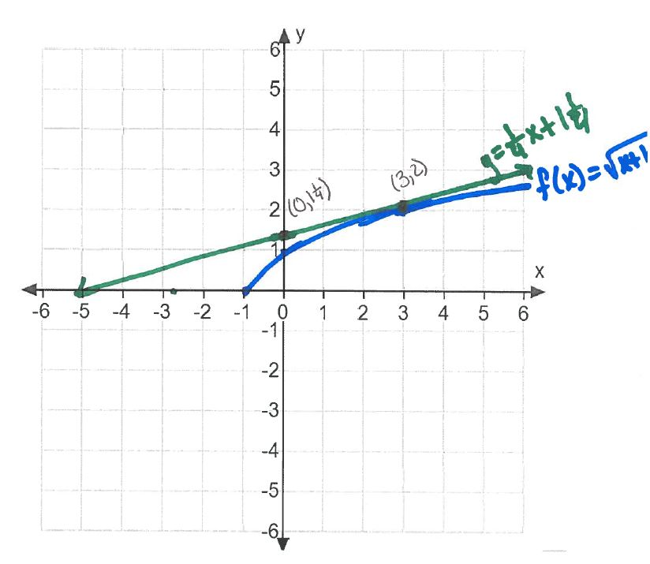

The slope of tangent line is given by: \(\displaystyle f'(3) = \lim _{h \to 0} \frac {f(3+h) - f(3)}{h}\). This limit has form \(\ZeroOverZero \), so it is an indeterminate
form.
\begin{align*} f'(3) = \lim _{h \to 0} \frac {f(3+h) - f(3)}{h}&=\lim _{h \to 0}\frac {\sqrt {3+h+1} - \sqrt {4}}{h}\\ &=\lim _{h \to 0}\frac {\sqrt {4+h} - \sqrt {4}}{h} \cdot \frac {\sqrt {4+h} + \sqrt {4}}{\sqrt {4+h} + \sqrt {4}}\\ &=\lim _{h \to 0}\frac {4+h-4}{h(\sqrt {4+h} + \sqrt {4})}\\ &=\lim _{h \to 0}\frac {h}{h(\sqrt {4+h} + 2)}\\ &=\lim _{h \to 0}\frac {1}{\sqrt {4+h} + 2}\\ &=\frac {1}{\sqrt {4+0} + 2}\\ &=\frac {1}{4} \end{align*}
Point on tangent line: \((3, f(3)) = (3, 2)\).
Equation of tangent line:
\begin{align*} y - f(3) = \frac {1}{4}(x-3) &\implies y - 2 = \frac {1}{4}x - \frac {3}{4}\\ &\implies y = \frac {1}{4}x + 1\frac {1}{4}. \end{align*}
